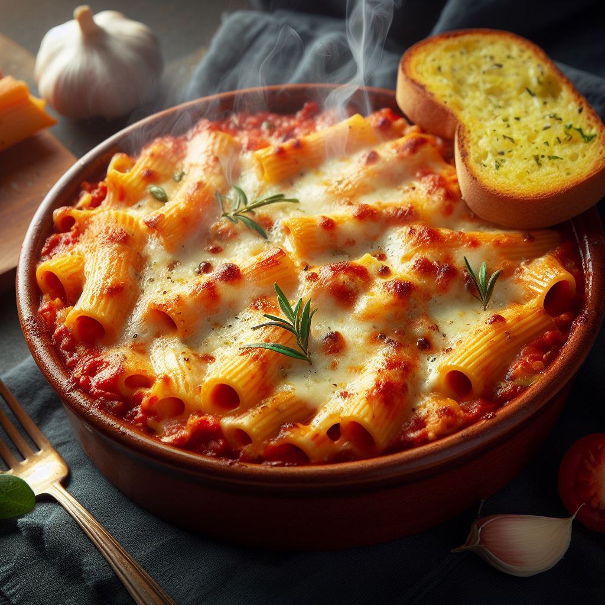

Baked Ziti

Description
Baked zibnhjkK[ti is a classic Italian-American casserole dish made with ziti pasta, tomato sauce, and cheese. It is often also made with ground beef or sausage, ricotta cheese, and other vegetables. Baked ziti is typically assembled in layers, with the pasta on the bottom, followed by the tomato sauce, meat and vegetables (if using), and cheese. The dish is then baked until the cheese is melted and bubbly.
Baked ziti is a hearty and comforting dish that is perfect for a weeknight meal or a potluck. It is also a popular dish to serve at weddings and other celebrations.
Here is a more detailed description of the different elements of baked ziti:
- Ziti pasta: Ziti is a short, hollow pasta tube that is ideal for baked ziti because it can hold a lot of sauce and cheese.
- Tomato sauce: The tomato sauce for baked ziti is typically a simple marinara sauce made with tomatoes, garlic, and herbs. However, you can also use a more complex sauce, such as a bolognese sauce or a vodka sauce.
- Ground beef or sausage: Ground beef or sausage is often added to baked ziti for extra flavor and protein. However, you can also use other types of meat, such as chicken or turkey.
- Ricotta cheese: Ricotta cheese adds a creamy richness to baked ziti. It is also a good source of protein and calcium.
- Other vegetables: Other vegetables that can be added to baked ziti include mushrooms, onions, peppers, and spinach.
- Cheese: Baked ziti is typically topped with a mixture of mozzarella and Parmesan cheese. However, you can also use other types of cheese, such as provolone or Asiago.
Ingredients
- 1 pound dry ziti pasta
- 1 onion, chopped
- 1 pound lean ground beef
- 2 (26 ounce) jars spaghetti sauce
- 6 ounces provolone cheese, sliced
- 1 ½ cups sour cream
- 6 ounces mozzarella cheese, shredded
- 2 tablespoons grated Parmesan cheese
Steps
- Bring a large pot of lightly salted water to a boil. Add ziti pasta, and cook until al dente, about 8 minutes; drain.
- Meanwhile, brown ground beef and onion in a large skillet over medium heat; stir in spaghetti sauce and simmer for 15 minutes.
- Preheat the oven to 350 degrees F (175 degrees C). Butter a 9x13-inch baking dish.
- Spread 1/2 of the ziti in the bottom of the prepared dish; top with Provolone cheese, sour cream, 1/2 of the meat sauce, remaining ziti, mozzarella cheese, and remaining meat sauce. Top with grated Parmesan cheese.
- Bake in the preheated oven until heated through and cheeses have melted, about 30 minutes.